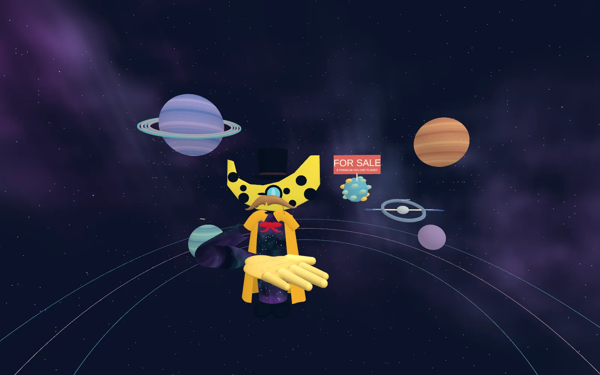
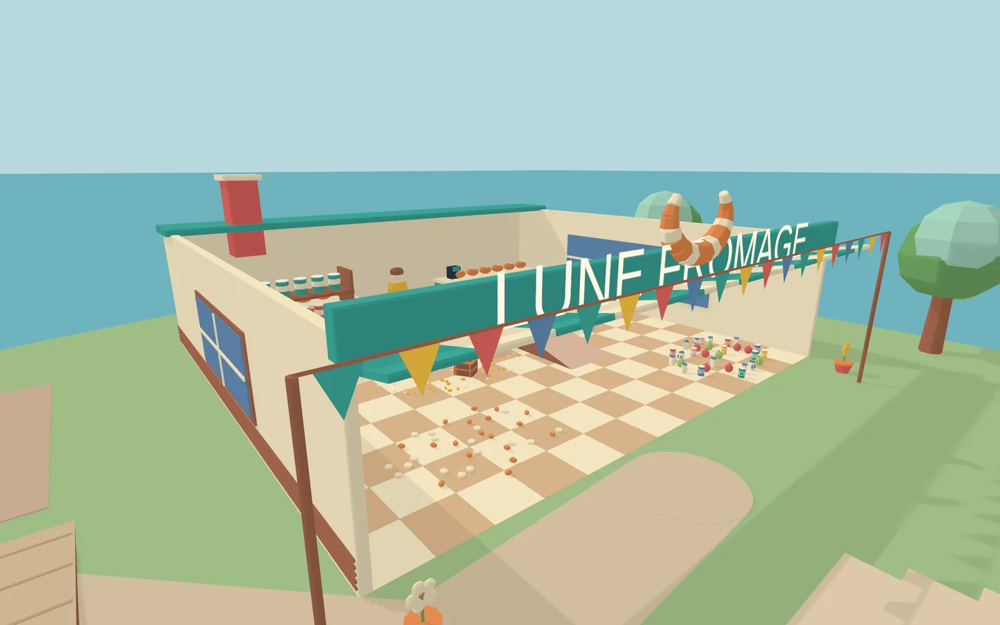

Roll. Collect. Grow.
Start with what your ball can manage. Every pickup adds to the pile, letting you tackle larger objects and discover new routes through the stage.
Original game · VRChat · Playable prototype
A little cheese. A very big appetite. Roll up a world of snacks, seaside clutter and increasingly ridiculous objects—then turn your haul into a planet fit for the lunar property market.

LuneWiz’s appraisal · Development renderMoon King: Roll it Up
A playful rolling game inspired by Katamari, with its own royal hosts, themed worlds and planet-making premise. Your VRChat avatar comes along for the ride.
Start with what your ball can manage. Every pickup adds to the pile, letting you tackle larger objects and discover new routes through the stage.
Size is only part of the job. Some contracts want a particular mix of ingredients—so a sea-themed planet needs more than whatever junk is closest.
Take your finished ball to LuneWiz’s enormous palm. A successful haul becomes a new planet, complete with a FOR SALE sign. Cosmic real estate is serious business.
Two players roll their own balls and grow independently while contributing to the same contract. The captain picks the stage and banks the finished planet; both players help build the haul.
Use desktop controls or a VR movement stick, brake into a turn and charge a burst dash. Optional hand propulsion lets VR players push and paddle. The ball rolls; the camera stays upright.
The contract board
Choose a timed contract or aim for a size goal. Routes open as you grow, turning small obstacles into the next thing on the menu.

01 / Bakery
Begin among tiny snacks, then work up through the courtyard, café terrace and orchard.
18 cm → 4 m
CONTRACT 1 OF 9
Collect small things first. As the ball grows, bigger objects become the next thing on the menu.
Interactive illustration, not the game. This miniature simplifies growth; the actual game uses object sizes, collision and each contract’s requirements.
Choose any planet above, or use the arrows. On a phone, swipe the contract row.
Starting and target sizes describe the current development tuning; goals and timers can change during playtesting.
A world tour
Actual development renders. Select an image to explore the scenery.
Development log
The latest pass reduces unnecessary pickup and scenery work, improves wrist-display fitting and refines the space menu. Real standalone Quest performance and live two-player sessions remain part of playtesting.
The beach, reef, blossom festival and volcano join the original five contracts. Reef and volcano goals care about what you collect, with shared ingredient progress when you bring a friend.
Substantial balance and polish work remains. Timers, route difficulty, movement comfort, wrist placement across avatars and live two-player behavior all need hands-on testing. Nine implemented contracts describe the prototype’s scope, not nine finished levels.
Before you roll
Size Goal finishes when you meet the contract requirements. Timed Contract lets you keep growing after qualifying, or bank the planet early through the captain’s menu. Ingredient requirements still apply where listed.
Gentle bumps slide or stop your ball. A hard, head-on crash can knock a few objects loose, which you or your friend can roll back up.
Solo play pauses the ball and contract clock. In co-op, your personal menu stops your own ball while your friend and the shared clock keep going.
A public play link has not been added yet. This is a playable prototype with nine implemented contracts, not a finished game. Substantial balancing, polish and hands-on desktop, VR and two-player testing are still ahead.